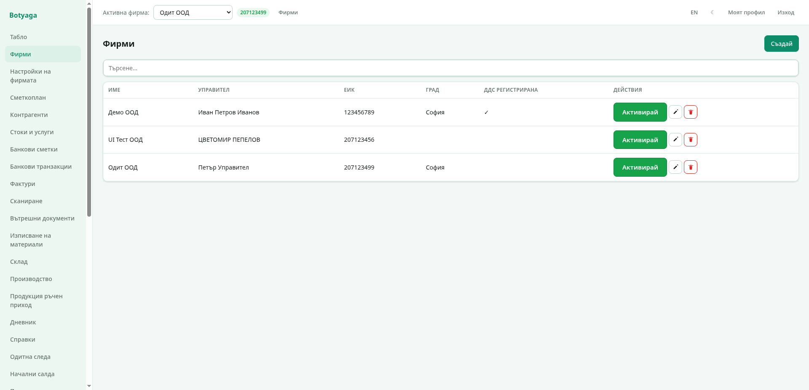
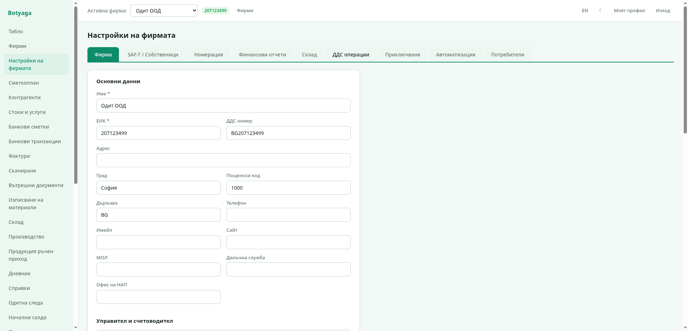

Начало · Фирми и настройки
Фирми и настройки
Мултитенантност, настройки на фирмата, роли и печат.
Фирми
Всяка фирма е отделен контейнер на данни. От Фирми се добавя, редактира и избира активна фирма. Превключването става и от падащото меню в горната лента.
- Основни данни: име, ЕИК, ДДС номер, МОЛ, адрес, город, област, пощенски код.
- Печат: подписи, фон, деноминация, IBAN/ BIC на фирмата (премахнати са от – банковите сметки са в модул Банка).
- Настройки на ДДС: кой подава данните в НАП (Управител/Счетоводител/Пълномощник), клон/поделение, описание на операцията по подразбиране.
Роли и права
Правата се задават на роля, а ролята се дава на потребител за конкретна фирма. Админ панелът (Потребители) показва матрица потребители × фирми × роли и позволява бързо редактиране.

